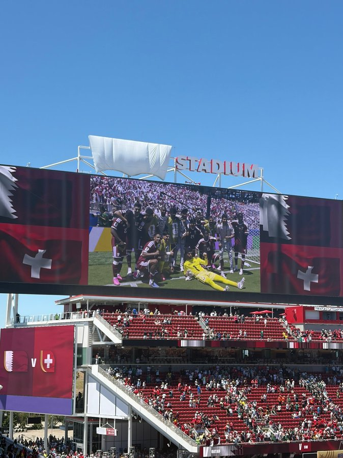
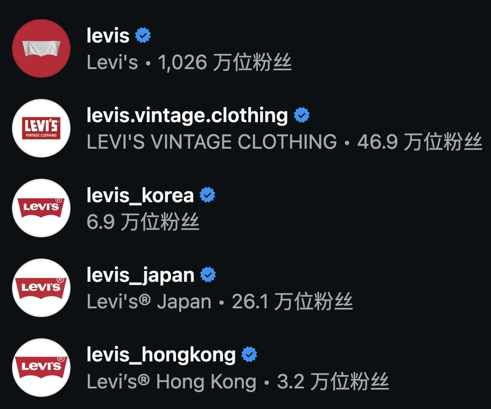
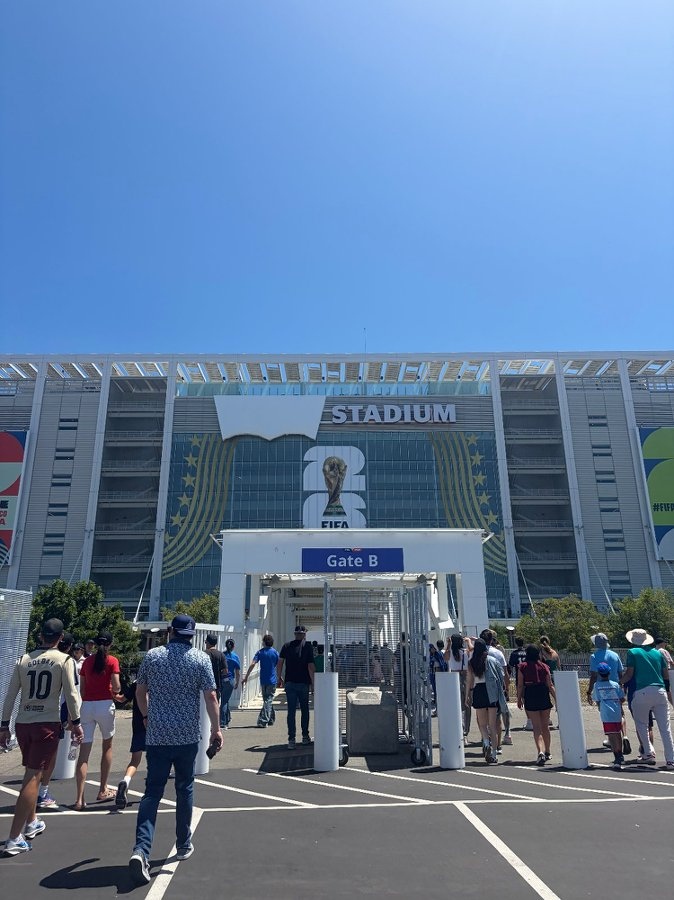
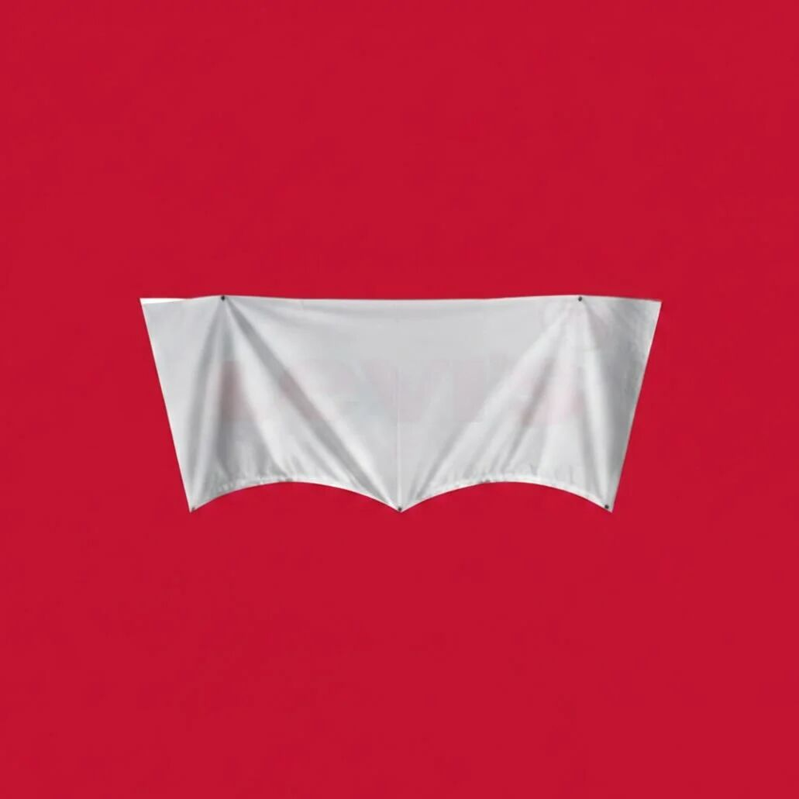
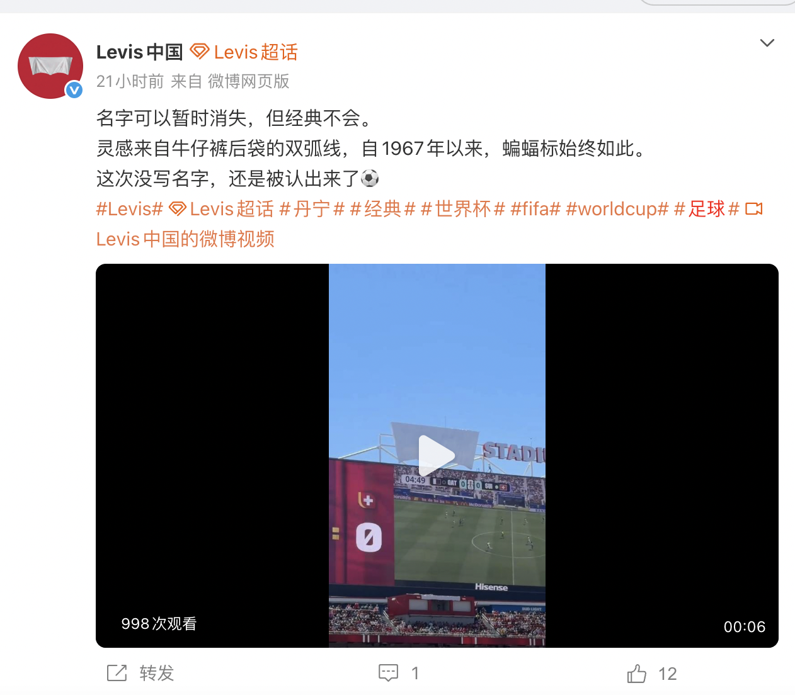
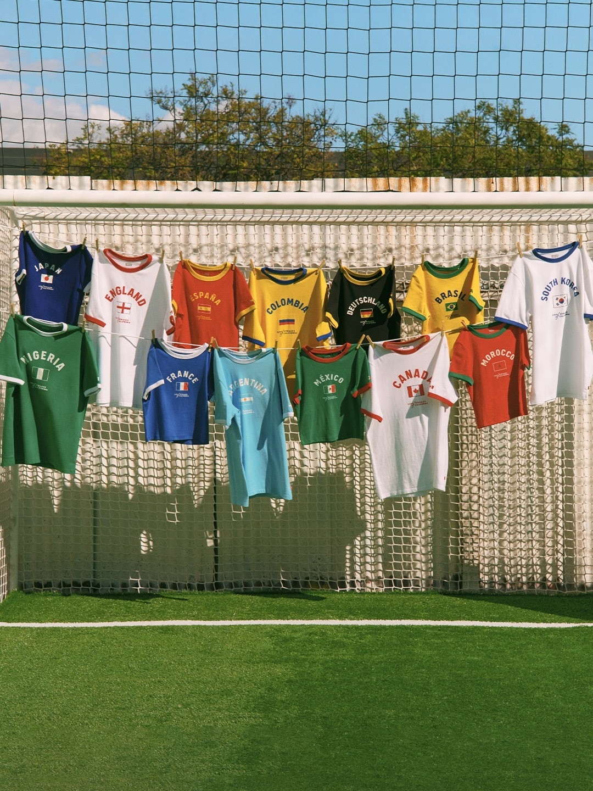
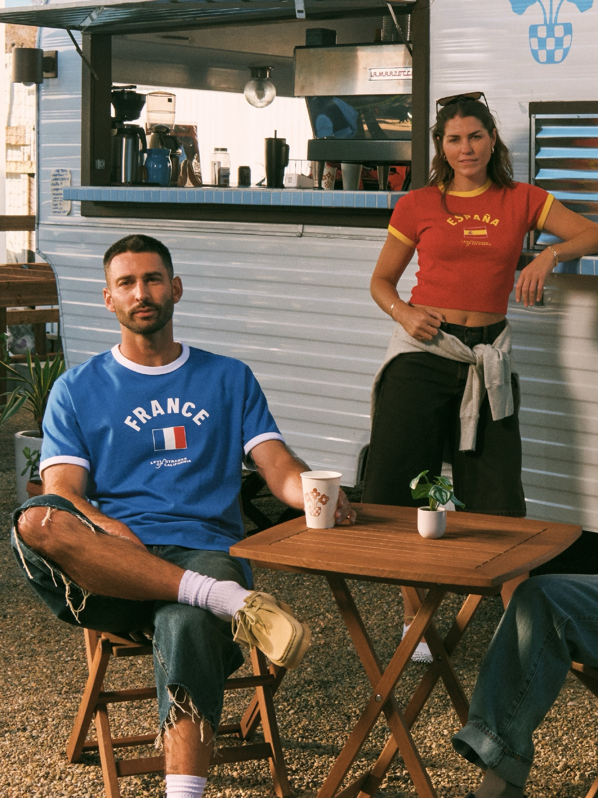

案例发生了什么



2026 世界杯湾区比赛进入长期冠名为 Levi’s Stadium 的场馆时，Levi’s 面临一个特殊处境：它拥有场馆冠名，却不是本届世界杯官方赞助商。按照赛事 “洁净场馆”品牌限制 规则，比赛期间场馆内外的非官方商业标识需要被遮挡。赛前，外立面与记分屏上方仍能清楚看到完整的 Levi’s 字样；进入世界杯运行状态后，这些文字被白色覆盖物盖住。
遮挡本来是为了让品牌从比赛画面中消失，现场结果却出现了反转。覆盖物沿着经典 Batwing 标识的外轮廓固定，文字虽然不可见，红色标签的形状仍然极易辨认；风吹动白布时，局部字母还会短暂露出。于是，“Logo 被遮住但品牌仍被认出”的前后对照，迅速成为球迷现场照片与行业讨论的核心画面。
Levi’s 没有把这件事包装成官方合作，也没有挑战赛事规则，而是迅速接住这次意外识别。全球及地区官方账号把头像换成“白布覆盖版 Batwing”；Levi’s 中国以“名字可以暂时消失，但经典不会”回应，并回溯 Batwing 自 1967 年以来的设计历史。一个原本被动发生的场馆限制，因此被改写成跨市场统一的社交动作。
品牌随后用国家主题足球服装继续承接关注，把讨论从“能不能认出 Logo”带回丹宁、球衣与生活方式商品。整条链路并不依赖官方赞助身份，而是依靠真实现场、快速社交响应和长期视觉资产完成：先发生一个反常识画面，再给出品牌解释，最后留下可购买的产品出口。
营销启发卡
用三张卡片保留最值得记住、讨论和迁移的部分。 卡片底部按主题连接全站相关案例、经典方法与深度文章。
核心动作
保留白布、轮廓和被遮挡字样的真实现场，不虚构官方赞助身份；把偶发现场转成跨市场账号头像和统一视觉，形成小时级社交跟进。
传播与商业机制
以““洁净场馆”品牌限制 限制 / 场馆冠名 / 社交响应 / 足球产品”为资源起点，进入创意内容、社交讨论、门店/商品与可即时参与的生活场景；结果优先观察创意记忆、品牌自然提及、参与行为与商品/服务转化，不把曝光直接等同于销售。
可复用的方法
非赞助品牌遇到 “洁净场馆”品牌限制 限制时，最有价值的不是挑战规则，而是检验自己的识别资产是否强到不需要名字；响应必须坚持事实、迅速统一视觉，并给注意力一个产品出口。
适用条件、风险与证据
- 切口必须与产品真实使用场景有关，否则容易变成蹭热度。
- 节奏上要靠近球迷讨论时刻，但不需要强行追每一场赛果。
- 对文化、肖像和赛事知识产权做独立审核。
品牌与权威来源物料
这里只展示可追溯到品牌、权利方、官方账号或明确注明原始出处的真实物料；研究图卡不计入案例图片。





官方资料、结果数据与下一步
已验证事实
- 2026 世界杯湾区比赛期间，Levi’s Stadium 外立面和记分屏上方的 Levi’s 字样被白布覆盖；本页已归档遮挡前对照、比赛现场和球迷入场视角，证明 “洁净场馆”品牌限制 限制真实发生。
- 遮挡没有抹去 Batwing 外轮廓。SocialBeta 留存的账号截图显示，Levi’s 全球主账号换成白布覆盖版头像；Levi’s 中国官方微博截图以“名字可以暂时消失，但经典不会”跟进，并追溯 1967 年设计来源。
- 同一案例页还收录国家主题足球服装产品图，证明传播并非只停留在一场规则意外，而是有可购买产品作为后端承接。
可追溯的结果
- 目前只取得 Levi’s 中国截图中单条视频的可见播放与互动快照，不足以代表全球整盘效果；没有跨账号去重触达、品牌搜索、Batwing 无提示识别或产品销售数据。
原始来源
来源链接优先指向品牌、权利方或持权媒体官方页面；品牌自述数据按原始定义记录，不视作独立审计结果。